For teams moving a healthcare (or other regulated-industry) AI proof-of-concept toward production, this talk names the specific architectural decisions that satisfy compliance and evaluation requirements as a byproduct, rather than as ad...
This reconstructs Anterior's architecture from claims c1-c8 as a diagram; the exact data-flow direction inside their implementation may differ from this rendering. (ours)
“you end up with something very brittle”
said at 18:03“it has to contain a complete record of absolutely every action that the agent took”
said at 05:43“is used in lots of different industries for example in finance is a transaction log”
said at 06:44“reads become more difficult because you have to read through all of the events”
said at 07:46“an architectural paradigm i might go to is object storage”
said at 10:18“can i solve for the constraint if i have an agent at point a with access to this data”
said at 12:22“any action that can be taken by an llm could also be taken by a human”
said at 13:58“give you effective privacy preserving evals almost as a byproduct”
said at 15:29Anterior sells agentic AI into health insurers, so these four primitives reflect what convinced their own compliance reviewers rather than a general-purpose framework. The specific standards named (SOC 2, HITRUST, HIPAA) mean the pattern generalizes most directly to other heavily regulated industries — finance, defense, government — rather than lighter-weight product contexts.
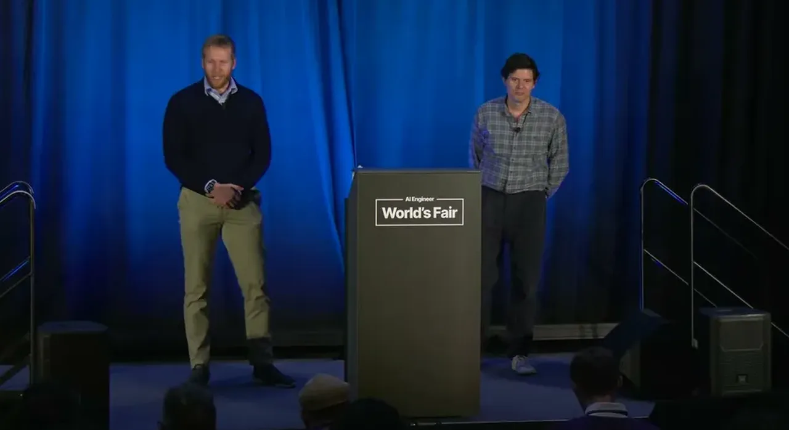
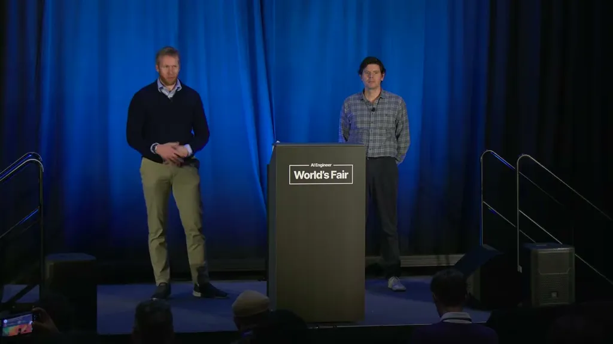
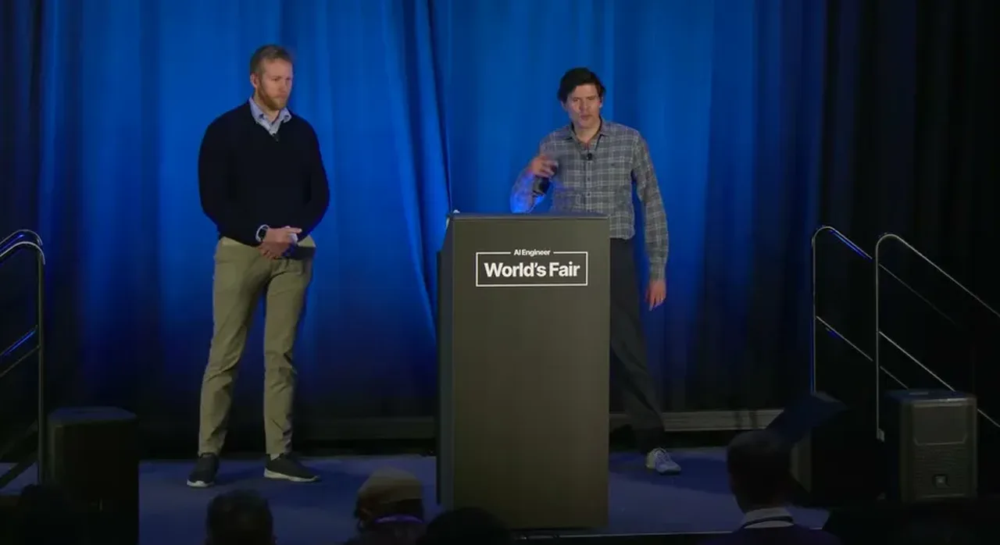
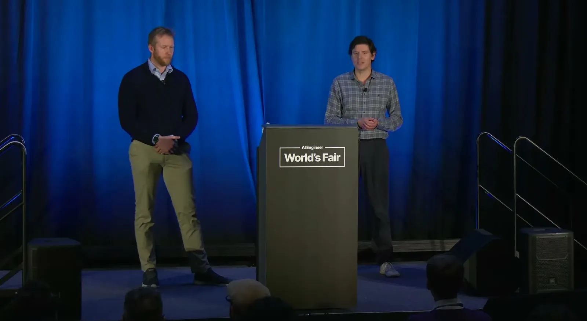
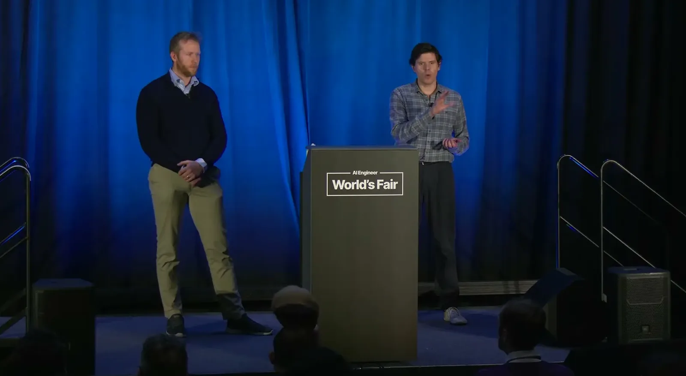
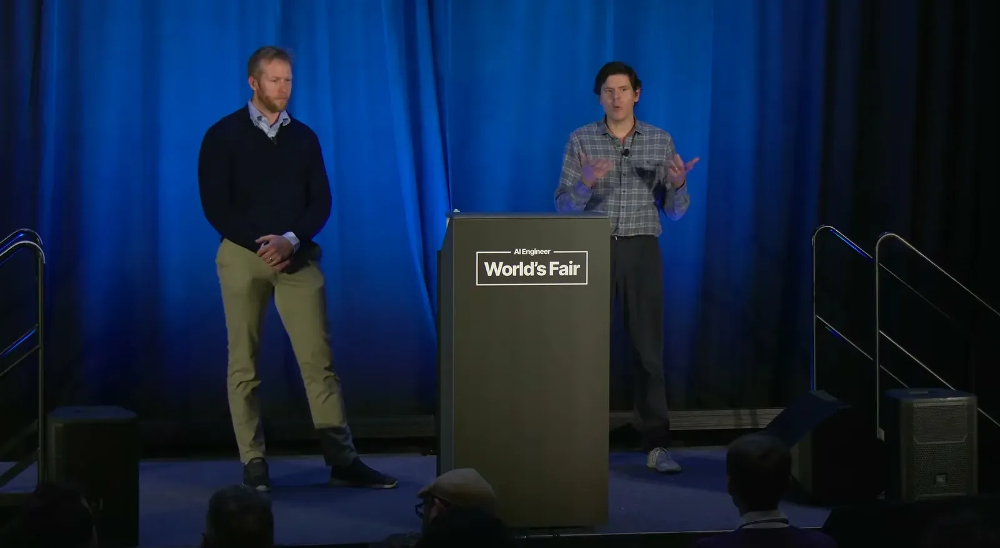
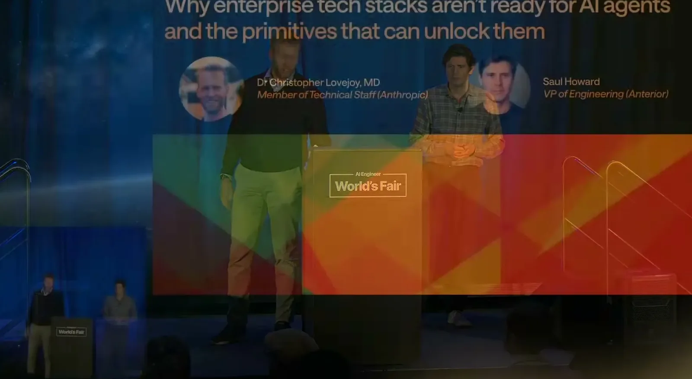
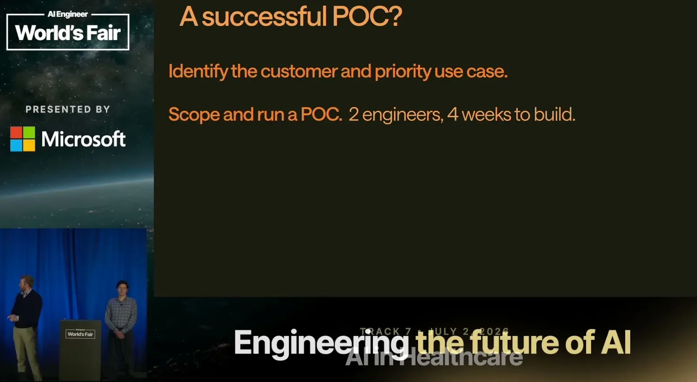
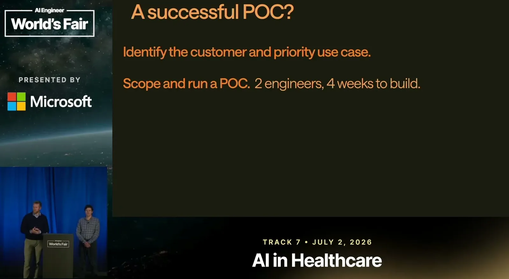
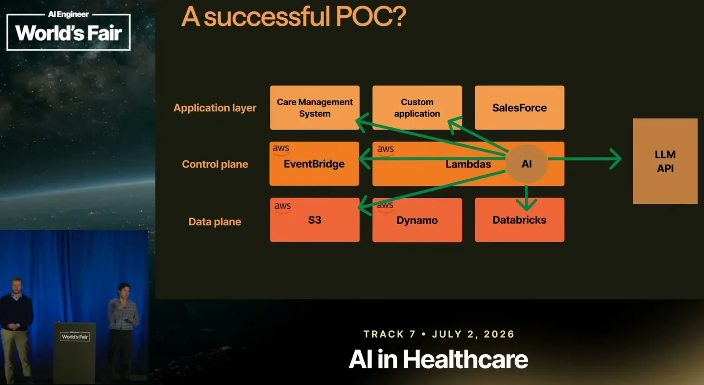
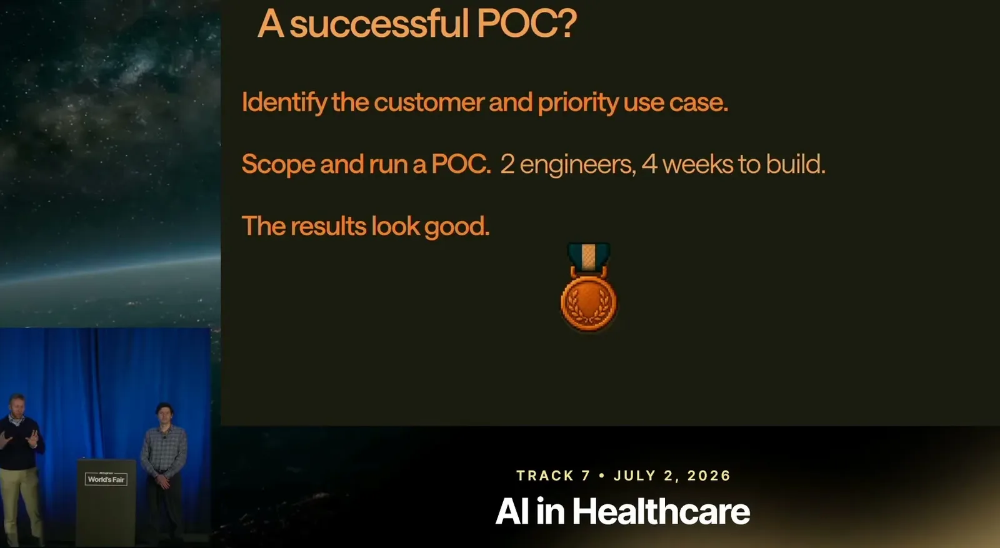
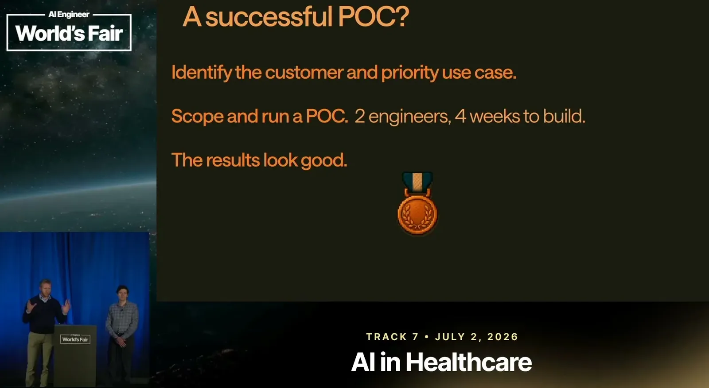
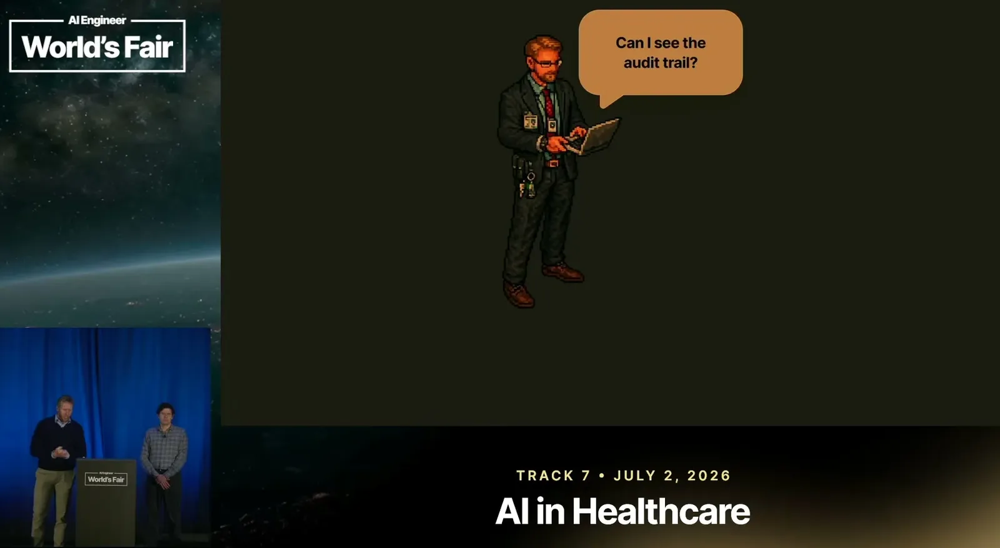
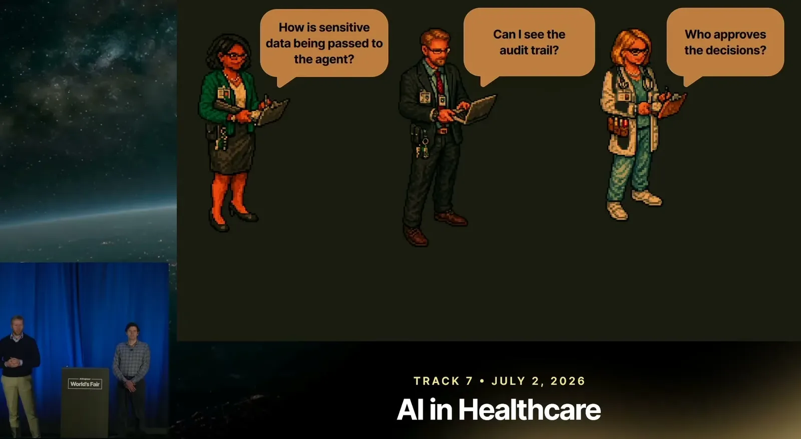
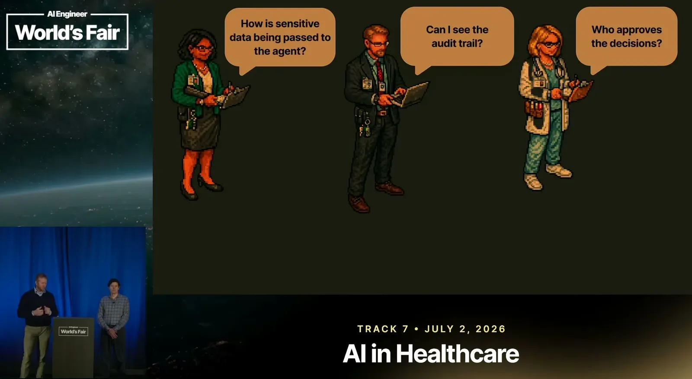
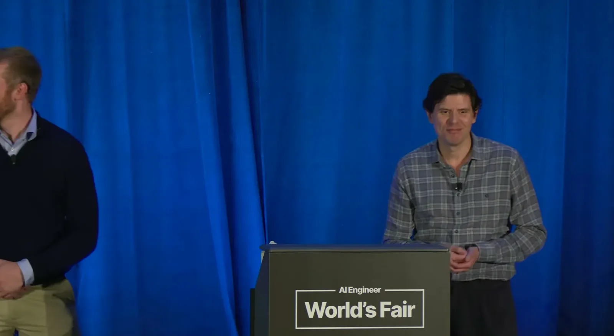
| Stance | Claim | t |
|---|---|---|
| asserts | For enterprise security frameworks like SOC 2, HITRUST, and HIPAA, an audit trail must contain a complete record of every action, every data access, and every authorization the agent used — far more than a typical developer log. | 05:43 |
| recommends | They recommend an append-only, immutable, unified transaction log, the event-sourcing pattern used in finance, as the architectural choice that makes auditability trivial rather than bolted on. | 06:44 |
| asserts | The event-log pattern makes writes trivial but makes reads harder, since reconstructing a view requires replaying the event history, mitigated with caching and snapshots. | 07:46 |
| recommends | For protected health information, they recommend schema-driven object storage kept separate from the event log, so events only reference data blobs rather than containing PHI directly. | 10:18 |
| warns | They frame the prompt-injection lethal trifecta risk as a constraint-solving question, whether an agent at one point with access to one dataset could also reach another, and use zero-trust bearer-token access to object storage to close that gap. | 12:22 |
| recommends | To handle unpredictable escalation needs, they define agents broadly enough that any action an LLM can take could also be taken by a human, so downstream steps don't need to know which one acted. | 13:58 |
| asserts | The immutable ledger, object storage, and human-agent equivalency together give privacy-preserving evals almost for free: replay any point in time, compare human vs. agent performance on the same task, and run evals on production data without exposing PHI. | 15:29 |
| warns | They warn that starting from a proof-of-concept and bolting on eval, security, and auditability requirements afterward produces something brittle and hard to generalize, versus building on those constraints from the start. | 18:03 |
Machine-readable copy embedded in this page (script#ontology) and in the corpus ontology.